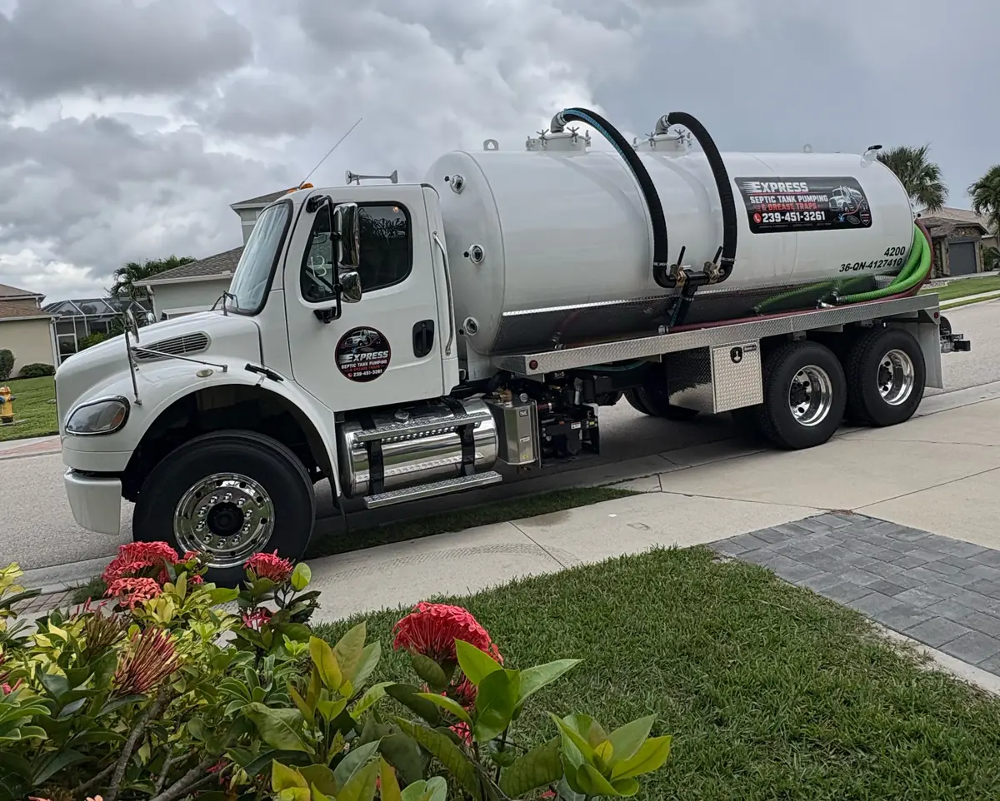
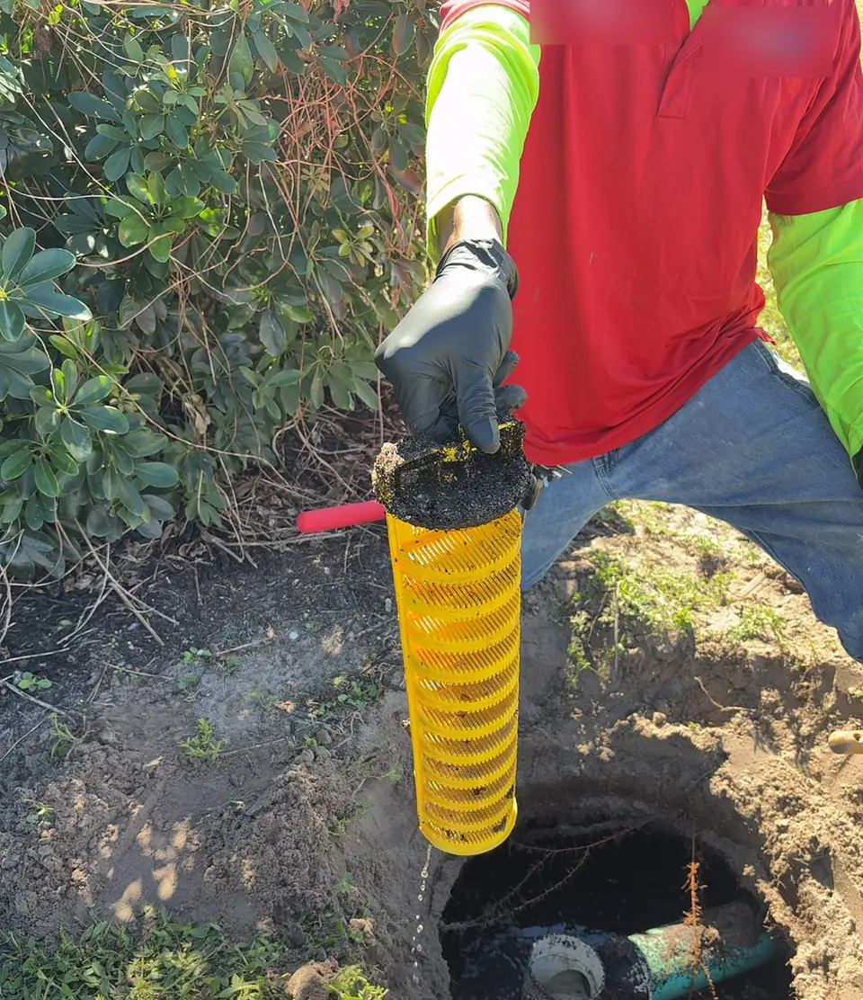
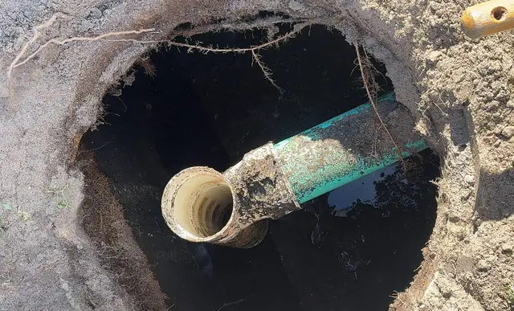

Septic tank pumping in Southwest Florida
Call day or night for a backup. For routine pumping, ask about same-day availability.
Owner-operated from Estero. Residential pumping from $399.99; dispatch confirms every appointment by phone or text.

Start here
What do you need?
Septic pumping for homes and businesses, grease traps for kitchens, and the work around them. Pick the closest match.
Also: drain field replacement, lift station pumping, grease trap & interceptor pumping.
City pages: Fort Myers, Cape Coral, Bonita Springs, all areas.
- My septic is backing upStop running water and call (239) 451-3261, day or night. Emergency and after-2:30 PM rates apply.
- Routine septic pumping for my homeWe find the lid, pump both compartments and tell you what we saw. From $399.99.
- Grease trap pumping for a kitchenRestaurants and food service, one-time or recurring. $695 for a 1,000-gallon trap or interceptor; other sizes quoted.
- I can't find my lid / I want a riserBuried lids are located and dug up (quoted on the call). 6-inch risers $299.99 each.
- A septic inspectionFor buyers, sellers and homeowners. Inspection with pump-out $549.99.
- Repairs or a drain fieldWe look at the system first, then quote. Licensed work is performed under a contracted Florida Certified Plumbing Contractor.
- Commercial septic or a lift stationOffices, rentals, churches and other properties on septic. Lift stations are quoted after we inspect.

Recent job
Buried lids, inlet and outlet tees, effluent filter
- Found
- Round concrete tank lids were buried.
- Did
- Dug up the lids, exposed the inlet and outlet tees, and pulled and cleaned the effluent filter.
See this job · All completed jobs

Same visit: a tee exposed once the lid was dug up. More jobs, including Lehigh Acres on November 17, are on the completed jobs page.
Pricing
What a pump-out costs
Residential pumping from$399.99
| Home size | Standard | Emergency or after 2:30 PM |
|---|---|---|
| 1–3 bedroom / 1–2 bath | $399.99 | $699.99 |
| 4 bedroom | $449.99 | $749.99 |
| 5 bedroom | $499.99 | $799.99 |
| Travel, jobs more than 30 minutes from our base in Estero | +$50 | |
| Locating a buried lid | Quoted on the call | |
Standard pricing covers a pump-out that starts before 2:30 PM. Emergency work, and any job that starts after 2:30 PM, is billed at the after-hours rate. A $50 travel fee applies to jobs more than 30 minutes from our base in Estero; dispatch tells you on the call if it applies. Locating a buried lid depends on the site and is quoted on the call.
- Septic inspection with pump-out $549.99
- 6-inch risers $299.99 each
How it works
What happens when you call
Call or request a time
Call (239) 451-3261 any time. For routine pumping you can also send a request through ServiceM8, the booking system we use, or text BOOK to the same number.
Dispatch confirms
Dispatch confirms every appointment by phone or text. A request isn't booked until we confirm the time, and dispatch tells you if the travel fee applies.
We find the lid and pump
We locate the tank, pump both compartments, inlet and outlet, and clean your filter on pump-outs. If we commit to a same-day pump-out, we keep working into the night until every scheduled job is done.
We tell you what we saw
You'll hear about anything that needs attention, and how to keep the filter clean between visits. How our service works
Google reviews
5.0 stars on Google from 44 reviews
Quoted word for word from our Google Business Profile. Checked November 26, 2026.
The two guys that came out were extremely kind and educational. It being the first time we’ve owned a septic system, they took the time to walk through how our system works, what the different components are, maintenance, etc. They were able to resolve our issue quickly and communicated what they were doing every step!
Company was great to work with. Very pleasant and professional on the phone and the driver was very knowledgeable and pleasant too. Their pricing was also very reasonable and they were able to service me quickly. Would definitely recommend this company and will use them again.
Friendly, Professional, and Affordable. I Highly recommend Express Septic Tank Pumping! They worked with my schedule and made the whole process easy.
Read all our Google reviews · Had a job with us? Leave a review
Service area
Lee, Collier & Charlotte County
Based in Estero, between Bonita Springs and Fort Myers. We also cover LaBelle in Hendry County.
- Estero
- Bonita Springs
- Naples
- North Naples
- Fort Myers
- Cape Coral
- Lehigh Acres
- San Carlos Park
- East Naples
- Golden Gate
- Marco Island
- Immokalee
- Ave Maria
- North Fort Myers
- Fort Myers Beach
- Three Oaks
- Gateway
- Alva
- Buckingham
- Sanibel
- Captiva
- Pine Island
- Port Charlotte
- Punta Gorda
- Everglades City
- Golden Gate Estates
- South Fort Myers
- Fort Myers Shores
- Tice
- Corkscrew
- LaBelle
- Charlotte Harbor
- Harbour Heights
Talk to Express
Open 24 hours, 7 days(239) 451-3261- TextText BOOK to (239) 451-3261
- Request onlineRequest routine service
- Emailexpressseptictankpumping@gmail.com
- Based in23357 Olde Meadowbrook Circle, Estero, FL 34134
Book or call
Request service
I'm experiencing a backup
Don't book online. Call now and stop running water until we get there. Day or night.
Call now · (239) 451-3261Routine pumping for my home
Send a request on ServiceM8, the booking system we use. We'll contact you to confirm a time; it isn't booked until we confirm. From $399.99.
Book routine service on ServiceM8 (opens in a new tab) ↗Grease trap for a restaurant or kitchen
One-time pump-outs or a recurring schedule. Call to set it up.
Call (239) 451-3261 Grease trap service
Operated by Express Septic Tank Pumping LLC · Call (239) 451-3261 · Text BOOK
Text BOOK to (239) 451-3261 to get our online booking link. If BOOK doesn’t fill in automatically, type BOOK in the message. By texting BOOK, you agree to receive text messages from Express Septic Tank Pumping LLC about your booking request. Msg & data rates may apply. Msg frequency varies. Reply HELP for help, STOP to opt out. Consent is not a condition of purchase. See our Privacy Policy and SMS Terms.
Request service or a quote
Send us your request and we'll confirm your appointment.
Open the request formForm not showing? Use the button above. Septic backing up right now? Please call (239) 451-3261 instead. See our privacy policy and SMS terms.

The owner
When you call, you're talking to the person who runs the business.
Express is owned and run by ORyan Atkinson, based in Estero. Insured · USDOT 6673233. Our 4,200-gallon truck has a split tank, one side for septic and one side for grease, so the two never mix.
Who holds which credential
Pumping, filter cleaning, lid locating and grease trap pumping are done by Express's own owner-operated crew. Septic repairs and drain field replacement are performed under a contracted Florida Certified Plumbing Contractor; the license is his, not Express's. Who holds which credential.
FAQ
Common questions
How much does septic tank pumping cost?
Residential pumping starts at $399.99. Standard pricing covers a pump-out that starts before 2:30 PM. Emergency work, and any job that starts after 2:30 PM, is billed at the after-hours rate. A $50 travel fee applies to jobs more than 30 minutes from our base in Estero; dispatch tells you on the call if it applies. Locating a buried lid depends on the site and is quoted on the call. Call (239) 451-3261 to confirm for your tank.
What is a septic tank riser?
A riser is an extension installed on top of the tank's access opening. It brings the lid up to ground level, so future pump-outs don't need digging. Express installs 6-inch risers for $299.99 each. Call (239) 451-3261 to confirm what your tank needs.
How often should I pump my septic tank?
The U.S. EPA recommends pumping most household tanks every 3 to 5 years, depending on tank size, household size and water use.
Do you pump grease traps?
Yes. We pump grease traps and interceptors for restaurants and food service, including in-ground interceptors and indoor traps, one-time or on a recurring schedule. $695 for a 1,000-gallon grease trap or interceptor; other sizes are quoted. Call (239) 451-3261.
Do you pump grease interceptors?
Yes. We pump in-ground grease interceptors and indoor traps for restaurants and food service. $695 for a 1,000-gallon grease trap or interceptor; other sizes are quoted. Call (239) 451-3261.
How much does grease trap pumping cost?
$695 for a 1,000-gallon grease trap or interceptor; other sizes are quoted. Call (239) 451-3261.
How often does a grease interceptor need pumping in Lee County?
Lee County Ordinance 14-24 requires grease interceptors to be fully pumped at least every 90 calendar days. Indoor grease traps must be cleaned at least weekly or whenever grease and solids exceed 20% of the unit volume. We can set up a recurring pump-out schedule. Call (239) 451-3261.
Do you do septic repairs?
Yes. We look at the system first, then quote the repair. Call (239) 451-3261. Work that needs a plumbing contractor's license is performed under a contracted Florida Certified Plumbing Contractor; his name, license number and a state verification link are on our drain field replacement page.
Do you replace drain fields?
Yes. We quote drain field replacement after inspecting the system. Call (239) 451-3261. The work is performed under a contracted Florida Certified Plumbing Contractor; his name and license are on our drain field replacement page.
Do you pump lift stations?
Yes. Lift station work is quoted after we inspect the system. Call (239) 451-3261.
How often should I clean my septic effluent filter?
If your tank has an effluent filter, it should be checked and cleaned at every pump-out and whenever drains slow. Express can advise on a schedule for your system. See effluent filter care. Call (239) 451-3261.
What happens if the effluent filter is dirty?
A dirty filter can cause backups or slow drains, and wastewater can be pushed back into the house. Express cleans your filter on pump-outs and can show you how to keep it clean.
How does soil bacteria protect a drain field?
Healthy bacteria in the soil break down effluent after it leaves the tank. Harsh chemicals, solids and grease overload can hurt that process. See why good bacteria protect your septic tank and drain field.
Can I book online?
Yes, for routine pumping: send a request on ServiceM8 and we'll contact you to confirm a time. For a backup, call (239) 451-3261 day or night.
Protect your system between pump-outs
- First time with a septic system?
- If you just moved from city sewer, bought a new-build home, or this is your first house on a septic tank, start with the complete guide: how the system works, first steps after you move in, what not to flush, and when to call.
- Effluent filter care
- If your tank has an effluent filter, it should be checked and cleaned at every pump-out and whenever drains slow. A dirty filter can cause backups or slow drains.
- Healthy bacteria protect the tank and drain field
- Anaerobic bacteria in the tank break down solids. Aerobic bacteria and the biomat in drain-field soil treat effluent before it reaches groundwater. Harsh chemicals, grease and solids overload can hurt that process.
More septic questionsFirst-time septic guideFilter careGood bacteriaWhy we pump both compartments